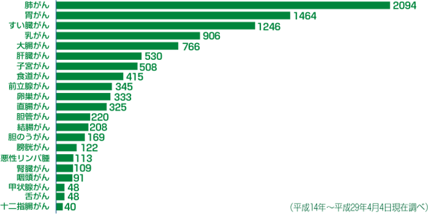

简体中文
简体中文


治療実績
当院では開院以来、多数の患者さんの治療に携わってきました。
さまざまな種類のがんに対して当院にて臨床研究を行なっています。
手術後の再発予防や進行・転移がんも含め、ほとんどすべての種類・進行度（病期：ステージ）のがんが治療対象となります。
さまざまな種類のがんに対して当院にて臨床研究を行なっています。
手術後の再発予防や進行・転移がんも含め、ほとんどすべての種類・進行度（病期：ステージ）のがんが治療対象となります。

改善症例
症例等に関してはパンフレットにも掲載しております。お電話頂ければパンフレットをお送り致します。
ご紹介する治療症例は、各患者さんに対して最善の治療結果を出すことを目指して行われた成果です。
同じ病名であったとしても、病状は個々で異なる為、一律の治療結果ではございません。
紹介されている全ての画像及び文章の無断転載を禁じます。
-->